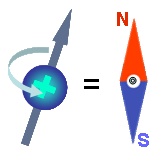
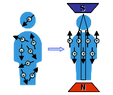
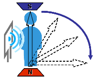
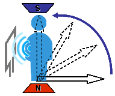
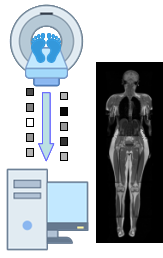

 Ciało ludzkie składa się w dwóch trzecich z wody, która jest zawarta w większym lub mniejszym stopniu w każdej tkance w organizmie ludzkim. Rezonans magnetyczny działa tylko na tkanki, w których występuje woda H2O lub wodór H. Jądro wodoru zbudowane jest z pojedynczego protonu. Proton ten wiruje bardzo szybko wokół własnej osi, co wiąże się z powstawaniem tzw. momentu magnetycznego. Oznacza to, że taki obiekt możemy traktować jak malutką namagnesowaną igiełkę kompasu.
 A zatem jeśli proton - "igiełka" znajdzie się w zewnętrznym polu magnetycznym to natychmiast ustawia się wzdłuż linii zewnętrznego pola i zaczyna dodatkowo precesować wokół tych linii. Wprowadzając człowieka w silne jednorodne pole magnetyczne sprawiamy, że momenty magnetyczne wszystkich atomów wodoru (których są miliardy w ciele człowieka) układają się wzdłuż linii tego pola. Część z nich układa się równolegle a część antyrównolegle i zawsze jest tak (w warunkach temperatury pokojowej), że tych równoległych jest trochę więcej. Ten niewielki nadmiar powoduje, że w ciele ludzkim, w czasie przebywania w stałym polu magnetycznym pojawia się dipol magnetyczny.
 Aparat rezonansu magnetycznego może działać na ten dipol. Może np. zmienić jego położenie o kąt 90st. Odbywa się to z użyciem anteny emitującej falę o częstotliwości radiowej (RF). "Przewrócenie" takiego dipola nie jest łatwe, ale możliwe - pod warunkiem zaistnienia zjawiska rezonansu magnetycznego. Częstotliwość fali radiowej musi być równa częstotliwości precesji protonów.
 Taki "przewrócony" dipol po ustaniu impulsu RF, natychmiast powraca do położenia równowagi czyli do swej wyjściowej pozycji również emitując przez chwilę fale radiowe. I właśnie ten etap jest najistotniejszy! Używając anteny odbiorczej zbieramy dane w postaci wartości fizycznych opisujących powrót dipola do położenia równowagi. Dane te zawierają bezpośrednią informację o rodzaju tkanki. Ten proces jest okresowo powtarzany co 30 do 3000 milisekund. Manipulując interwałem czasowym oraz kątem wychylenia dipola magnetycznego, uzyskujemy różne sekwencje obrazowania MR.
 Zgromadzone wartości fizyczne różnią się między sobą w zależności od składu chemicznego tkanki. W dużym skrócie możemy powiedzieć, że dla rezonansu magnetycznego tkanki różnią się między sobą sposobem w jaki dipol magnetyczny wyprowadzony z położenia równowagi do niego powraca. Inny zestaw danych uzyskamy dla np. istoty białej mózgu a inny dla istoty szarej. Używane w aparatach MR anteny nadawcze i odbiorcze stanowią integralną część specjalnych cewek, które są układane jak najbliżej ciała Pacjenta na badanym obszarze. Każdy skaner MR wyposażony jest w cewki dedykowane do poszczególnych narządów : cewki do badania głowy, brzucha, kolana, piersi, kręgosłupa i wiele innych.
Na koniec komputer przetwarza pakiety danych na punkty o zadanej rozdzielczości i odpowiednich odcieniach szarości w szerokim zakresie (od bieli do czerni) odzwierciedlając budowę badanego organu na obrazie MR.